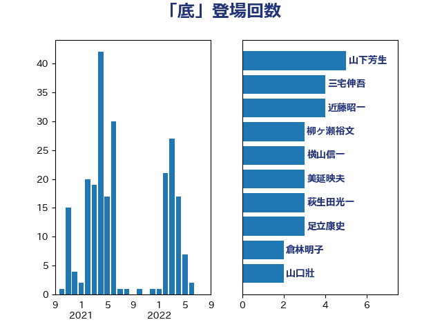

単語「底」

| 山下芳生 | 日本共産党 | 5 回 |
| 三宅伸吾 | 自由民主党 | 4 回 |
| 近藤昭一 | 立憲民主党 | 4 回 |
| 柳ヶ瀬裕文 | 日本維新の会 | 3 回 |
| 横山信一 | 公明党 | 3 回 |
| 美延映夫 | 日本維新の会 | 3 回 |
| 萩生田光一 | 自由民主党 | 3 回 |
| 足立康史 | 日本維新の会 | 3 回 |
| 倉林明子 | 日本共産党 | 2 回 |
| 山口壯 | 自由民主党 | 2 回 |
| 本庄知史 | 立憲民主党 | 2 回 |
| 梶山弘志 | 自由民主党 | 2 回 |
| 田中英之 | 自由民主党 | 2 回 |
| 田嶋要 | 立憲民主党 | 2 回 |
| 田村智子 | 日本共産党 | 2 回 |
| 福島みずほ | 社会民主党 | 2 回 |
| 秋野公造 | 公明党 | 2 回 |
| 菅義偉 | 自由民主党 | 2 回 |
| 蓮舫 | 立憲民主党 | 2 回 |
| 西村康稔 | 自由民主党 | 2 回 |
| 野上浩太郎 | 自由民主党 | 2 回 |
| 長坂康正 | 自由民主党 | 2 回 |
| 阿部知子 | 立憲民主党 | 2 回 |
| 青山繁晴 | 自由民主党 | 2 回 |
| 麻生太郎 | 自由民主党 | 2 回 |
| ながえ孝子 | 無所属 | 1 回 |
| 三木亨 | 自由民主党 | 1 回 |
| 上野通子 | 自由民主党 | 1 回 |
| 中村裕之 | 自由民主党 | 1 回 |
| 井坂信彦 | 立憲民主党 | 1 回 |
| 今井絵理子 | 自由民主党 | 1 回 |
| 伊佐進一 | 公明党 | 1 回 |
| 伊藤渉 | 公明党 | 1 回 |
| 住吉寛紀 | 日本維新の会 | 1 回 |
| 佐藤啓 | 自由民主党 | 1 回 |
| 佐藤茂樹 | 公明党 | 1 回 |
| 加田裕之 | 自由民主党 | 1 回 |
| 加藤勝信 | 自由民主党 | 1 回 |
| 勝部賢志 | 立憲民主党 | 1 回 |
| 北村経夫 | 自由民主党 | 1 回 |
| 古川康 | 自由民主党 | 1 回 |
| 吉川元 | 立憲民主党 | 1 回 |
| 吉田久美子 | 公明党 | 1 回 |
| 吉田統彦 | 立憲民主党 | 1 回 |
| 堀井巌 | 自由民主党 | 1 回 |
| 塩川鉄也 | 日本共産党 | 1 回 |
| 大串博志 | 立憲民主党 | 1 回 |
| 大西健介 | 立憲民主党 | 1 回 |
| 安達澄 | 無所属 | 1 回 |
| 室井邦彦 | 日本維新の会 | 1 回 |
| 宮本徹 | 日本共産党 | 1 回 |
| 寺田静 | 無所属 | 1 回 |
| 小倉將信 | 自由民主党 | 1 回 |
| 小林鷹之 | 自由民主党 | 1 回 |
| 小沢雅仁 | 立憲民主党 | 1 回 |
| 小泉進次郎 | 自由民主党 | 1 回 |
| 小野田紀美 | 自由民主党 | 1 回 |
| 尾崎正直 | 自由民主党 | 1 回 |
| 山岡達丸 | 立憲民主党 | 1 回 |
| 山田俊男 | 自由民主党 | 1 回 |
| 山田美樹 | 自由民主党 | 1 回 |
| 岩渕友 | 日本共産党 | 1 回 |
| 岸真紀子 | 立憲民主党 | 1 回 |
| 平山佐知子 | 無所属 | 1 回 |
| 徳永エリ | 立憲民主党 | 1 回 |
| 新垣邦男 | 立憲民主党 | 1 回 |
| 本村伸子 | 日本共産党 | 1 回 |
| 杉久武 | 公明党 | 1 回 |
| 梅村聡 | 日本維新の会 | 1 回 |
| 森屋隆 | 立憲民主党 | 1 回 |
| 森本真治 | 立憲民主党 | 1 回 |
| 横沢高徳 | 立憲民主党 | 1 回 |
| 河西宏一 | 公明党 | 1 回 |
| 泉健太 | 立憲民主党 | 1 回 |
| 浅田均 | 日本維新の会 | 1 回 |
| 浅野哲 | 国民民主党 | 1 回 |
| 浜口誠 | 国民民主党 | 1 回 |
| 渡辺創 | 立憲民主党 | 1 回 |
| 渡辺周 | 立憲民主党 | 1 回 |
| 滝波宏文 | 自由民主党 | 1 回 |
| 片山さつき | 自由民主党 | 1 回 |
| 牧山ひろえ | 立憲民主党 | 1 回 |
| 田中健 | 国民民主党 | 1 回 |
| 田村貴昭 | 日本共産党 | 1 回 |
| 石井章 | 日本維新の会 | 1 回 |
| 石川大我 | 立憲民主党 | 1 回 |
| 石橋通宏 | 立憲民主党 | 1 回 |
| 福田達夫 | 自由民主党 | 1 回 |
| 笹川博義 | 自由民主党 | 1 回 |
| 篠原孝 | 立憲民主党 | 1 回 |
| 紙智子 | 日本共産党 | 1 回 |
| 緒方林太郎 | 無所属 | 1 回 |
| 舞立昇治 | 自由民主党 | 1 回 |
| 舟山康江 | 国民民主党 | 1 回 |
| 若林健太 | 自由民主党 | 1 回 |
| 藤川政人 | 自由民主党 | 1 回 |
| 藤木眞也 | 自由民主党 | 1 回 |
| 西村智奈美 | 立憲民主党 | 1 回 |
| 西野太亮 | 自由民主党 | 1 回 |
| 赤嶺政賢 | 日本共産党 | 1 回 |
| 赤羽一嘉 | 公明党 | 1 回 |
| 近藤和也 | 立憲民主党 | 1 回 |
| 進藤金日子 | 自由民主党 | 1 回 |
| 野田佳彦 | 立憲民主党 | 1 回 |
| 鈴木俊一 | 自由民主党 | 1 回 |
| 鈴木敦 | 国民民主党 | 1 回 |
| 長谷川岳 | 自由民主党 | 1 回 |
| 階猛 | 立憲民主党 | 1 回 |
| 青木愛 | 立憲民主党 | 1 回 |
| 音喜多駿 | 日本維新の会 | 1 回 |
| 黄川田仁志 | 自由民主党 | 1 回 |